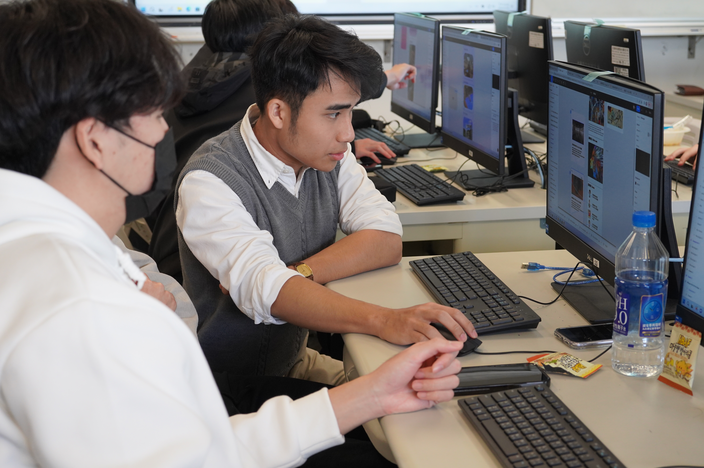

AI 工程實習
宇統資訊
參與車牌辨識資料分析、監視與船隻辨識，以及加密貨幣數位鑑識相關系統開發。

01 EDUCATION
碩士班 / 就讀中
資訊管理碩士班
學士班
資料科學學士班
02 WORK EXPERIENCE
AI 工程實習
參與車牌辨識資料分析、監視與船隻辨識，以及加密貨幣數位鑑識相關系統開發。
AI 工程實習 / 2025.06–2025.08
參與稽核 AI Agent 開發與流程自動化。
程式教師 / 2023.02–2026.07
教授 Python、資料分析與自動化課程。
研究助理 / 2025.06–2026.06
參與 TIGPS 計畫的同儕與社會網絡子計畫。
03 PHOTOS
CLUB
社團活動中的調酒示範。